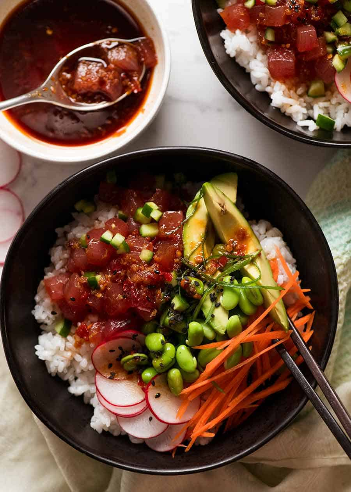

Tuna Poke Bowl

Description
So what is a poke bowl anyway? First off, it is pronounced “poh-keh” it is not “poke”. Poke means “to slice or cut” in Hawaiian and refers to chunks of raw, marinated fish which is then tossed over rice, with diverse toppings and flavorful sauces.
Ingredients
Tuna Marinade
- 1 pound sushi grade tuna, diced into bite-sized cubes (or salmon)
- 1/4 cup soy sauce
- 1 teaspoon rice vinegar
- 1 teaspoon sesame oil
- 1/4 cup sliced green onions
- 1/2 teaspoon sesame seeds
- 1/4 teaspoon grated ginger
For the Poke Bowl
- 3 cups cooked jasmine rice (or sushi rice)
- 1 large mango, diced
- 2 large avocado(s), sliced or diced
- 1/2 cup edamame, shelled
- 1/2 cup radishes, thinly sliced
- 1 tablespoon sesame seeds (garnish)
- 1/2 cup nori sheets, thinly sliced (optional)
- 1-2 sliced green onions (garnish)
For the Spicy Mayo
- 1 tablespoon sriracha (adjust depending on desired spice level!)
- 1 teaspoon fresh lime juice
- 1/2 cup mayo
Steps
- Whisk together soy, rice vinegar, sesame oil, grated ginger and sesame seeds in a mixing bowl. Add in the cubed fish and sliced green onions. Gently stir to combine, and marinade in the fridge for 10 minutes.
- Prepare your Poke Bowl base with rice, mango, edamame, radishes, avocado, nori, and any other desired toppings. Top with marinated tuna, making sure to drizzle some marinade sauce on top! Garnish with additional sesame seeds and green onions. Serve with sriracha mayo!
Return to home page